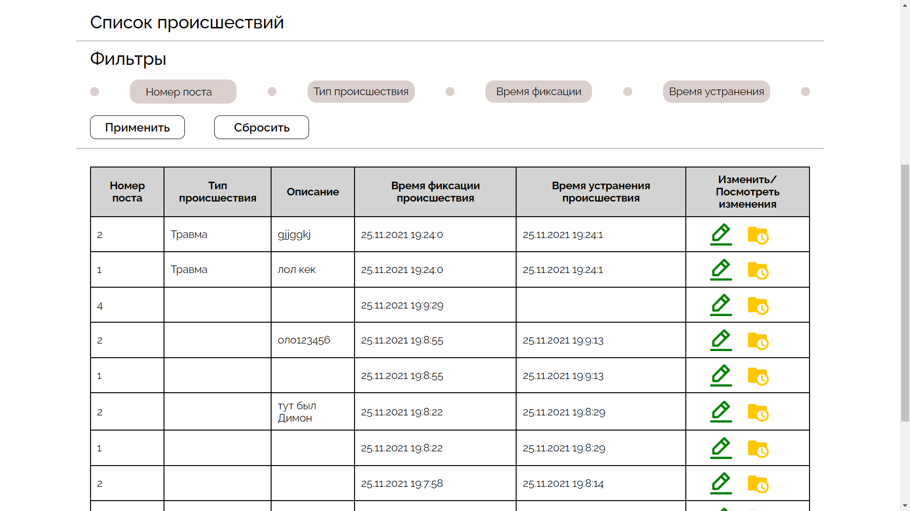
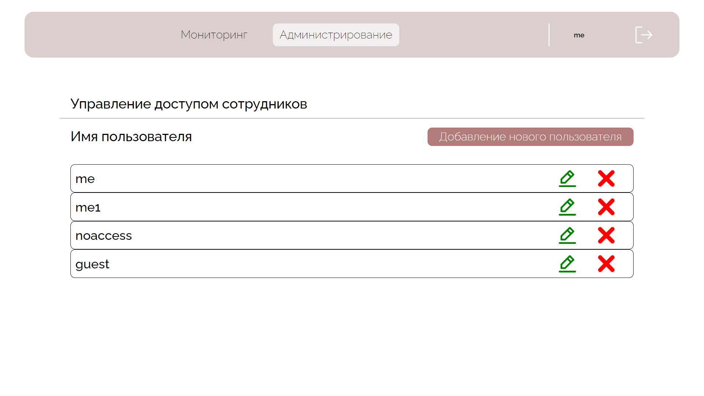
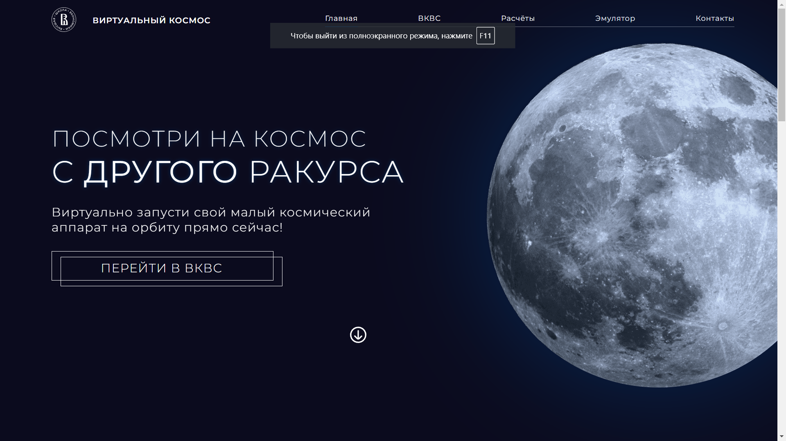
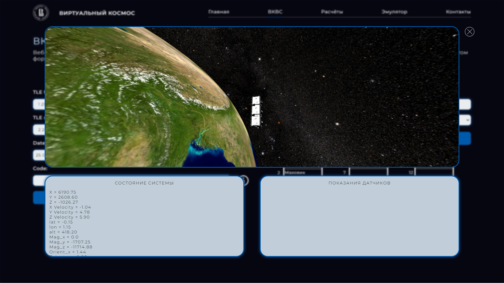

- Автоматизация процесса управления конвейером и информирование сотрудников о выполнении плана.
Разработка веб-приложения для данной цели;


- Визуализация виртуального космоса и виртуального спутника (веб-приложение).
Приведение в порядок пользовательского интерфейса, переход на новый дизайн, переход на новый движок
BabylonJS -> ThreeJS, доработка деталей космоса и спутника, переход на React.


- Разработка интерфейса приложения (нашего факультета) статистических данных, результатов работы data
scientist'ов (на React);
- Вёрстка страницы сайта (отборочное задание на
стажировку);
- Веб-приложение для редактирования локальной базы данных в реальном времени;